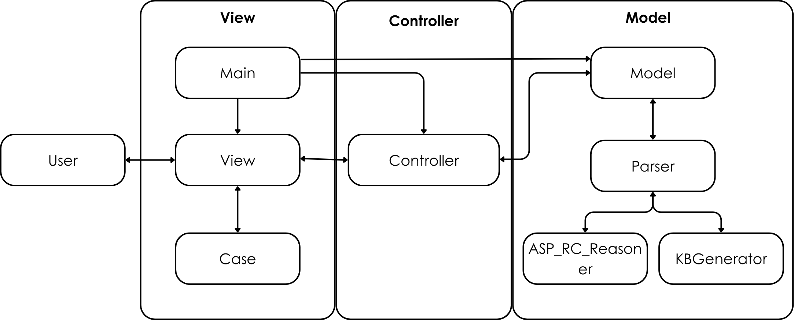

![Comic strip. Frame 1: Two penguins see birds flying; penguin 1 (Pecky) says 'Birds can fly and penguins are birds';
penguin 2 says 'So, penguins can fly'. Frame 2: Penguin 2 jumps off the cliff and cannot fly. Frame 3: Penguin 1 looks
down to the bottom of the cliff and remarks 'So, penguins cannot fly'; a textbox reads 'But, penguins are birds so they
must fly. So, penguins can and cannot fly, which is impossible. Sooo... no penguins exist!'. Frame 4: Penguin 1 disappears;
a textbox reads 'Moral of the story: Not all birds fly. Birds typically fly.'](images/playtupus.png)
Introduction
Knowledge representation and reasoning is a branch of Artifical Intelligence which uses logic to represent knowledge about the world. Automated reasoning methods are used to draw new conclusions from a set of known statements. Classical reasoning systems were traditionally used to draw conclusions from knowledge bases. Classical reasoning systems are monotonic, which means that all information is certain and adding new information will not retract conclusions previously drawn.
For example, Perry the Platypus once used a classical reasoning system. While spending time with Phineas, Perry learned that mammals give birth to live young. Given that they are a platypus and that platypuses are mammals, Perry logically deduced that platypuses must give birth to live young as well. However, Ferb later informed Perry that platypuses actually lay eggs. This contradiction confused Perry, as their reasoning system was not flexible enough to accommodate the new information. Perry's dilemma illustrates a key weakness of classical reasoning: it struggles to handle exceptions or conflicting data.
Defeasible (non-monotonic) reasoning systems accomidates exceptional knowledge allowing Perry to say "mammals typically give birth to live young". When Perry concludes that "platypus do not give birth to live young", the system would retract its previous conclusion that "platypus do give birth to live young". Perry would still exist if they used a "common sense" approach to reasoning. The aim of this project was to encode this common sense reasoning using Answer Set Programming (ASP). We focused on computing reasoning systems defined by the KLM framework.
Background
Propositional Logic
Propositional Logic uses symbols to represent basic
statements about the world that are assigned a value of true or false. Boolean operators are used to
combine these
statements to form more complex statements.

For example, Perry would use the symbols p, m and ly to represent platypus, mammals and liveyoung, respectively. Perry then combines these symbols using boolean operators to make the statements "mammals have liveyoung", "platypus are mammals" and "platypus do not have liveyoung".
Truth tables can be used to define the meaning of each boolean operator. And, those meanings are used to reason about propositional statements. Common questions asked are "What statements can we conclude to be true given the information known?". This is known as classical entailment.
 Using truth tables (or more efficient semantic tableau methods), Perry can logically conclude
that
"platypus can give birth to liveyoung". But, Perry already knows that "platypus do not give birth to
liveyoung" and it is impossible for both
of these statements to be true. So, Perry does not exist. To solve this, Perry explored defeasible
reasoning which minimcs common sense reasoning.
Using truth tables (or more efficient semantic tableau methods), Perry can logically conclude
that
"platypus can give birth to liveyoung". But, Perry already knows that "platypus do not give birth to
liveyoung" and it is impossible for both
of these statements to be true. So, Perry does not exist. To solve this, Perry explored defeasible
reasoning which minimcs common sense reasoning.
The KLM Approach
The KLM approach, proposed by Kraus, Lehmann and Magidor, is a well known approach to defeasible reasoning. It allows us to represent statements such as "mammals typically give birth to liveyoung" using a defeasible implication operator. Statements which use the defeasible operator as known as defeasible statements.
If Perry tries to conclude that a new defeasible statement is true based on previous statements, classical and defeasible, they can use defeasible entailment to determine the answer.
Defeasible entailment has been defined by multiple defeasible entailment relations in the KLM framework. The entailment relation focused on in this project is Rational Closure.
Rational Closure
 Rational Closure is a defeasible entailment formalism within the KLM framework, designed for
reasoning with exceptions. It
organises knowledge hierarchically, allowing more specific statements to override general ones.
Rational Closure is a defeasible entailment formalism within the KLM framework, designed for
reasoning with exceptions. It
organises knowledge hierarchically, allowing more specific statements to override general ones.
The reasoning process involves two main steps. First, the statements in a knowledge base are ranked by exceptionality — how specific or exceptional they are relative to others. More exceptional statements are assigned higher ranks. This step is defined by an algorithm called "Base Rank", whose purpose is to rank knowledge bases.
The second step happens when querying the knowledge base (e.g., about platypuses), where general statements at lower ranks are progressively filtered out, leaving only the most relevant, specific information. This ensures that exceptions are handled effectively, allowing conclusions to reflect both general rules and exceptional cases. This step is defined by an algorithm called "Rational Closure", whose purpose is to perform defeasible entailment checks over the ranked knowledge base.
Answer Set Programming
A programming paradigm is a style of programming that defines the structure and elements of a program. There are many different programming paradigms, each with its own set of rules and conventions. Most programming languages are based on the imperative programming paradigm, which explicitly defined the steps taken to arrive at a result. While the declarative paradigm defines what solutions of a problem should look like and not the steps taken to solve a problem.
Below are some contrasting features of the imperative programming paradigm and the declarative programming paradigm:
Answer Set Programming (ASP) is a declarative programming paradigm that uses logic to represent knowledge and solve problems. ASP programs are written in a logic-based language and are used to represent a set of rules and facts. The rules are used to define the problem and the facts are used to define the initial state of the problem. The ASP solver then uses these rules and facts to find solutions to the problem. Rules in ASP are of the following form:
Example: Perry can take all the facts about platypus and mammals and represent it using the following ASP rules:
Objectives
- Devise an implementation of Rational Closure based on ASP
- Devise an implementation of a knowledge base generator based on ASP
- Create an interpreter application to interface the ASP implementation of Rational Closure and the Knowledge Base Generator. The aim of the application is to improve usability of Rational Closure and act as an explainer of Rational Closure entailment.
ASP Definition of Rational Closure
Jack Mabotja
Motivation
This part of the project is motivated by the observation that while Rational Closure has been implemented in various imperative programming languages, there has been limited exploration of alternative implementation approaches. This gap in research presents an opportunity to investigate whether different programming paradigms might offer improved performance or other benefits. Our choice of ASP is driven by the hypothesis that its declarative nature might be particularly well-suited to the logical structures inherent in Rational Closure. ASP is known for its ability to separate the logic of algorithms from their control mechanisms, a feature that can potentially enhances programmer efficiency and code clarity.
We used two approaches to implement Rational Closure in ASP. The first approach was defined after the first approach was tested and its limitations were identified.
- Search-based Approach
- We start by defining the characteristics of the target solution we seek.
- We then enumerate the whole search space.
- We search through the search space to find our target.
- After identifying the solution, we then return it.
- The search space size increases exponentially, making the implementation harder to scale.
- In most cases, there are multiple solutions that satisfy the characteristics of our target solution, requiring optimisation to find the most optimal solution.
- Recursive Approach
In this approach, Rational Closure is treated like a search problem. The procedure is defined below:
The benchmark results of the search-based approach illuminated two bottlenecks of the approach:
In this approach, Rational Closure is restated recursively. This approach eliminates both bottlenecks in the search-based approach.
Results
The two implementation approaches were benchmarked against an existing imperative implementation of Rational Closure. Only Base Rank was benchmarked. The results are shown below:


Note!
- Racquel also created a search-based implementation of Rational Closure in ASP.
- I created two search-based implementations of Rational Closure.
- In the second graph, I plotted the performance of Racquel’s encoding against the defeasible statement count in isolation to clearly demonstrate its behaviour.
Key Findings:
- The runtimes of the search-based implementation increase exponentially with the statement count.
- The runtimes of all the search-based BaseRank encodings change with the increase in the rank count, but the change is largely influenced by the statement count.
- The recursive approach is the most ideal way to implement Rational Closure in ASP.
Knowledge Base Generator
Racquel Dennison
One of the aims was to define a set of rules that generate knowledge bases for testing our ASP definition of Rational Closure. A parameterised knowledge base was defined which allowed for generating knowledge bases with different features, such as:
- Allowing users to specify how many defeasible statements they would like in the knowledge bases.
- Allowing users to specify how many defeasible ranks they would like in the knowledge bases.
- Alowing users to specify how the statements should be distributed among the ranks. Three distributions were defined:
- Uniform: Statements are distributed evenly among ranks.
- Random: A random assignment of the number of statements per rank.
- Linear: The number of statements per rank grows linearly.
- Allowing for the generation of knowledge bases with the inclusion of classical statements.
- Allowing for the generation of knowlege bases with encoded classical statements as defeasible statements.

For example, given the ranked knowledge base:
In our generator, the following is obtained:
defeasible(a(2),l0) defeasible(a(2),a(4)) defeasible(a(2),a(7)) defeasible(a(2),a(1))defeasible(a(1),a(5)) defeasible(a(1),a(0)) defeasible(a(1),-l0)defeasible(a(0),a(5)) defeasible(a(0),a(9)) defeasible(a(0),l0)The format of statements produces are of the right format expected as input in our definition of Rational Closure. The knowledge base generator was tested on its generation time. We explored different solver configurations offered by clasp when running experiments.
Rational Closure interpreter
To facilitate the use of Rational Closure in ASP, we developed the Rational Closure Interpreter (RCI), a user-friendly graphical user interface that allows users to interact with the reasoner without needing to learn about the ASP language, offering a more intuitive and accessible experience. Furthermore, the RCI provides an explanation service of how the Rational Closure algorithm works, and how the conclusions are drawn.
The Rational Closure Interpreter is developed in the PyQt framework, a Python library that provides a set of Python bindings for the Qt application framework. In its architecture, RCI adheres to the Model-View-Controller (MVC) pattern and employs a multi-tier structure, resulting in a modular and scalable design. For the backend, the RCI uses the ASP implementation of Rational Closure, developed by Racqual Dennison.
Main Features of the Rational Closure Interpreter:
The Rational Closure Interpreter provides users with 2 main services:
Entailment Checker
This service allows users to check if a defeasible query is entailed by a knowledge base.
- Input, upload, or generate a knowledge base.
- Enter a defeasible query.
- Determine if the defeasible query is entailed by the knowledge base.
Process Visualisation
This service allows users to visualise the process of how the entailment result was reached, providing explanations.
- Step through the process of how the entailment result was reached.
- Highlight the formulas that directly and indirectly influence the entailment of the query.
The source code for the RCI is publicly available on GitHub here
Conclusions
- The recursive approach is the more ideal for implementing Rational Closure in ASP than the search-based approach.
- The recursive approach Rational Closure implementation in ASP is more efficient than the existing imperative implementation.
- ASP was a well suited language to generate defeasible knowledge bases.
- Using ASP when it comes to computing RC entailment provided a different prespective to abstracting the problem.
Resources
For further project details, please see the following project documentation:
-
Sibusiso Buthlezi
-
Racquel Dennison
-
Jack Mabotja
-
Overall Project
Team
-
Sibusiso Buthelezi
Author
-
Racquel Dennison
Author
-
Jack Mabotja
Author
-
Tommie Meyer
Supervisor
-
Jesse Heyninck
Supervisor